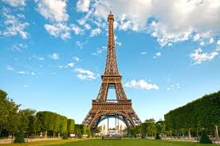
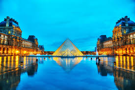
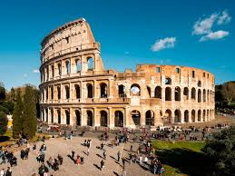
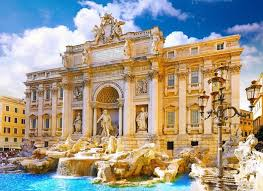
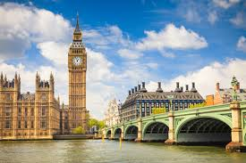
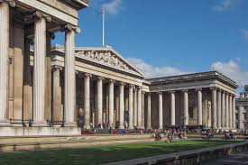

Lugares Turísticos na Europa
Descubra os Destinos Mais Incríveis do Velho Continente

Europa, um continente repleto de história, cultura e belezas naturais,
oferece destinos turísticos para todos os gostos. De cidades vibrantes a
paisagens deslumbrantes, conheça alguns dos principais pontos
turísticos europeus que não podem faltar no seu roteiro.
Paris, França
Torre Eiffel: O cartão postal de Paris e um dos monumentos mais
famosos do mundo. Não deixe de subir ao topo para uma vista panorâmica
da cidade.

Museu do Louvre: Lar da Mona Lisa e de inúmeras obras-primas da arte mundial.
Reserve algumas horas para explorar suas vastas galerias.

Roma, Itália
Coliseu: Uma das maiores obras da engenharia romana, este anfiteatro é
uma visita obrigatória para os amantes de história.

Fontana di Trevi: Jogue uma moeda e faça um pedido nesta fonte icônica. Uma
experiência mágica no coração de Roma.

Londres, Inglaterra
Big Ben: Este famoso relógio é um símbolo de Londres e oferece um espetáculo
noturno quando iluminado.

Museu Britânico: Explore milhares de anos de história e cultura com
uma das coleções mais completas do mundo.
